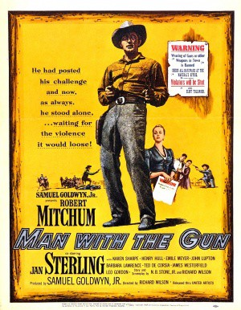
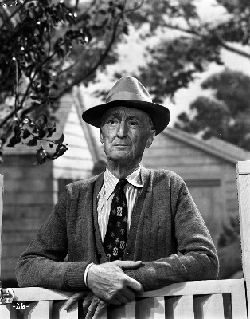

#6854 Der Einzelgänger
Alternativ: Man with the Gun
 
 IMDB-Wertung: 6.7 / 10
IMDB-Wertung: 6.7 / 10  Metascore: 0
Metascore: 0 
A stranger comes to town looking for his estranged wife. He finds her running the local girls. He also finds a town and sheriff afraid of their own shadow, scared of a landowner they never see who rules through his rowdy sidekicks. The stranger is a town tamer by trade, and he accepts a $500 commission to sort things out.
Jahr: 1955
Dauer: 118 Minuten
FSK: 12
Land: USA Studio: United ArtistsTonspuren: DD5.1 - ,
Untertitel:
Auflösung: 1080p (1920x1080) Größe: 7936 MB
Genre: Western
Regisseur: Richard Wilson
Drehbuch: N.B. Stone Jr.
Soundtrack:
Darsteller:
 Robert Mitchum als Clint Tollinger
Robert Mitchum als Clint Tollinger- Jan Sterling als Nelly Bain
- Karen Sharpe als Stella Atkins
- Henry Hull als Marshal Lee Sims
 Emile Meyer als Saul Atkins
Emile Meyer als Saul Atkins John Lupton als Jeff Castle
John Lupton als Jeff Castle- Barbara Lawrence als Ann Wakefield
 Ted de Corsia als 'Frenchy' Lescaux
Ted de Corsia als 'Frenchy' Lescaux Leo Gordon als Ed Pinchot
Leo Gordon als Ed Pinchot James Westerfield als Mr. Zender
James Westerfield als Mr. Zender- Jay Adler als Cal , uncredited
 Claude Akins als Jim Reedy , uncredited
Claude Akins als Jim Reedy , uncredited Angie Dickinson als Kitty , uncredited
Angie Dickinson als Kitty , uncredited Herman Hack als Townsman , uncredited
Herman Hack als Townsman , uncredited-  Burt Mustin als Hotel Desk Clerk , uncredited
- Maidie Norman als Sarah - Nelly's Maid , uncredited
- Maudie Prickett als Mrs. Elderhorn , uncredited
- Stafford Repp als Arthur Jackson , uncredited
 Buddy Roosevelt als Townsman , uncredited
Buddy Roosevelt als Townsman , uncredited- Pat Sheehan als Blonde , uncredited
- Florenz Ames als Doc Hughes , uncredited
- Joe Barry als Dade Holman , uncredited
- Jimmie Booth als Townsman , uncredited
- Archie Butler als Henchman , uncredited
- Norma Calderón als Luz , uncredited
- Neil Collins als Townsman , uncredited
- Thom Conroy als Bill Emory , uncredited
- Mara McAfee als Mable , uncredited
 Robert Osterloh als Virg Trotter , uncredited
Robert Osterloh als Virg Trotter , uncredited- John Rice als Townsman , uncredited
Datei: X:\HD-Western-1900-1959\Einzelgänger, Der (1955, FSK12, 1920x1080).mkv seit 04.09.2017
Festplatte: HD Eastern+Western
 Es gibt insgesamt 98 Filme in der Gruppe 'HD-Western-1900-1959'
Es gibt insgesamt 98 Filme in der Gruppe 'HD-Western-1900-1959'